The standard WARP setup routes all your internet traffic through Cloudflare. This guide sets up Cloudflare Zero Trust with split tunneling so that only traffic goes through
WARP - everything else uses your normal connection.
Why bother? Sending all traffic through WARP can slow down other browsing and streaming. Split tunneling gives you the routing benefit for the game server while leaving the rest of your internet untouched.
What you'll need: a free Cloudflare account (sign up at cloudflare.com), about 10-15 minutes, and a computer. The Cloudflare One Client is also available for macOS and Linux - the dashboard steps are identical across platforms.
1
Create a Cloudflare Zero Trust Team
Go to cloudflare.com and log in to your account (or create a free one). In the left sidebar, find Protect & Connect → Zero Trust.
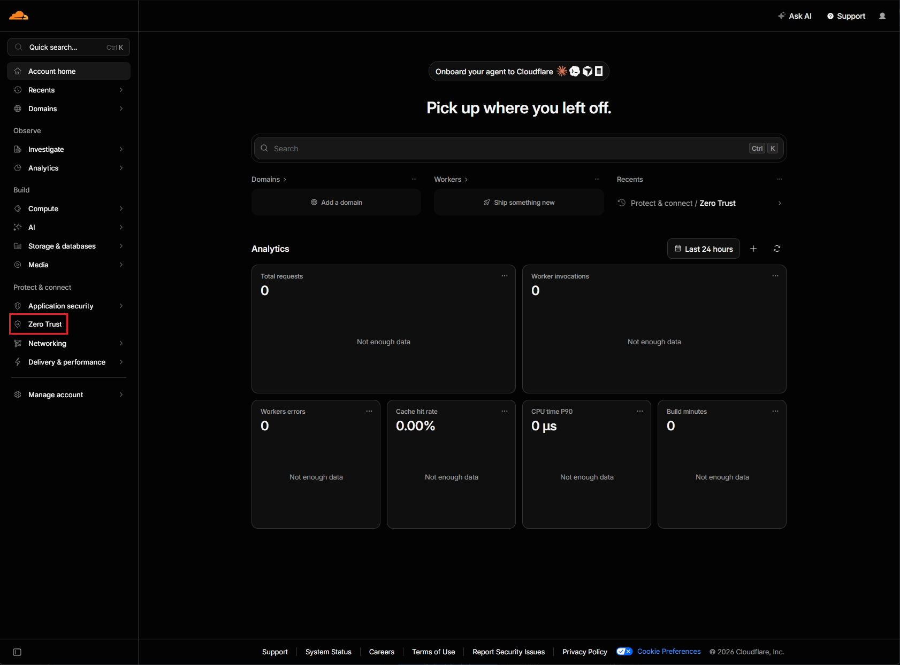
Find Zero Trust in the left sidebar under "Protect & Connect".
Click the blue Get started button and then select the free plan. Provide your payment information (it will be free for up to 50 users) and then click the blue Continue to Zero Trust button.
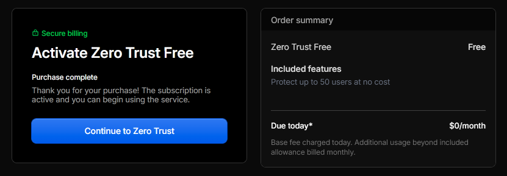
After entering your payment details, click Continue to Zero Trust.
On the Cloudflare One screen in the top right there is an Account details panel, click Settings.
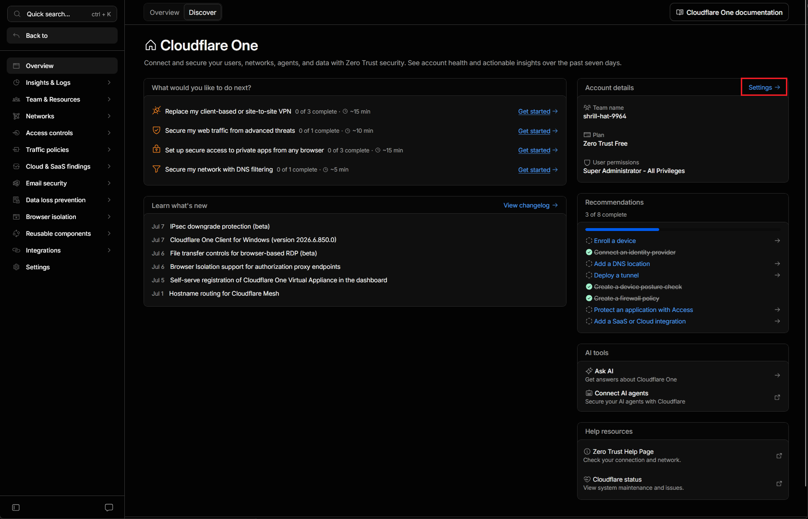
Open the Account details panel in the top right and click Settings.
Beside the random team name, click edit and enter a
team name you will remember. All team names are unique and cannot be reused. Then click save in the text box.
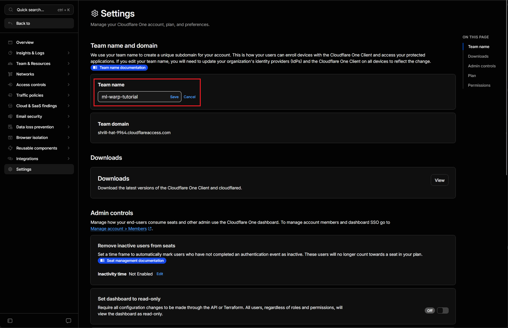
Enter a memorable team name and click Save.
2
Create Cloudflare Zero Trust Team Joining Policy
In the left sidebar, find Access Controls → Policies. Then click the blue Add a policy button.
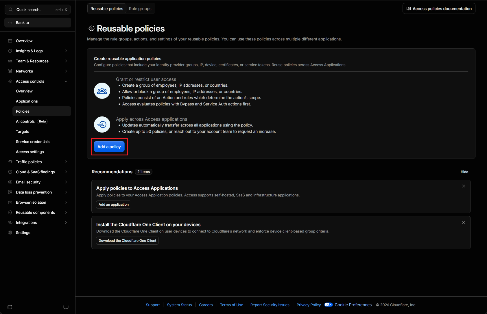
Go to Access Controls → Policies and click Add a policy.
In the policy rules pane, select Emails from the dropdown and enter the email you used for your Cloudflare account. Then enter a policy name and click the blue Save policy button.
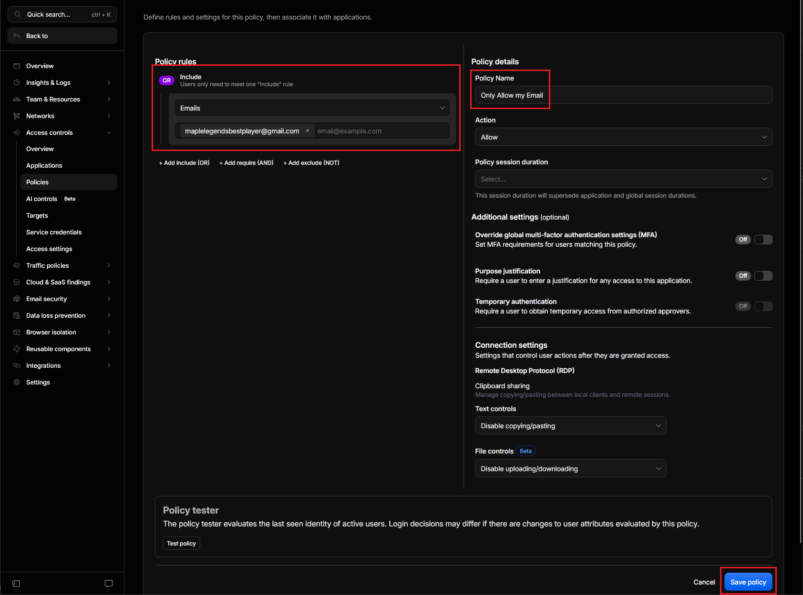
Select Emails, enter your Cloudflare account email, a policy name, and save.
In the left sidebar, find Team & Resources → Devices. Then click Management along the top. Then click the blue Manage button.
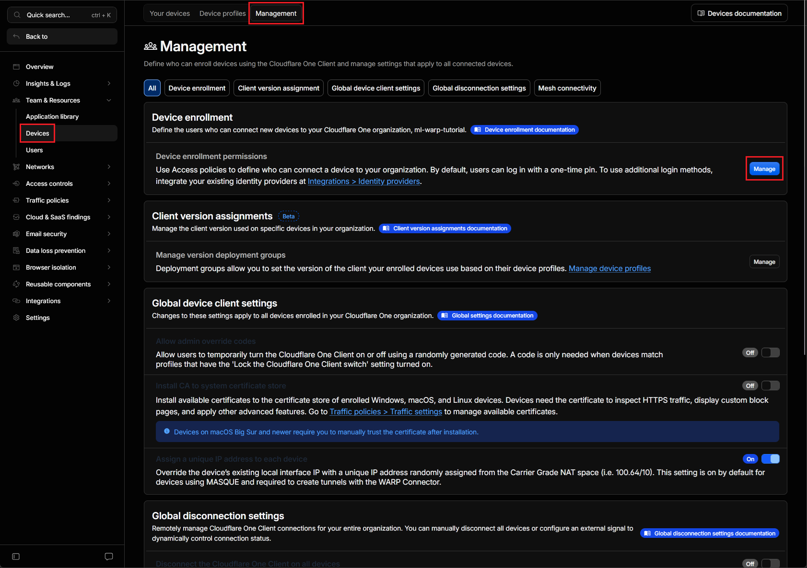
Go to Devices → Management and click Manage.
Click the dropdown beside the blue button to add the policy you created before, for example "Only Allow my Email (allow)". Then click the blue Save button.
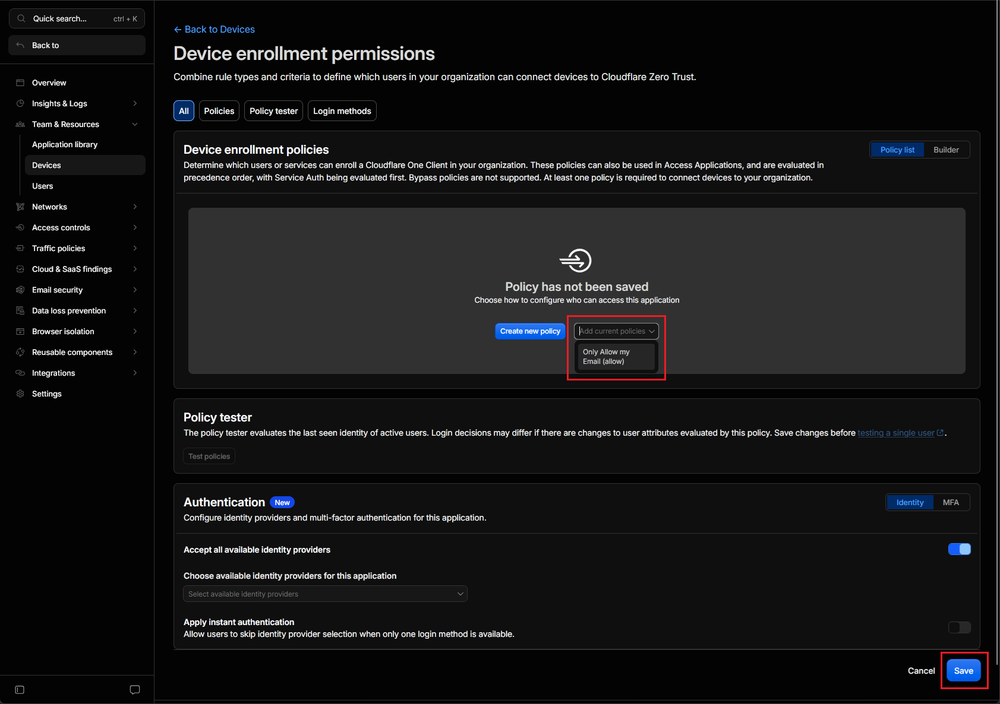
Add your enrollment policy from the dropdown, then click Save.
3
Add Split Tunneling Policy
In the left sidebar, find Teams & Resources → Devices. Then go to Device profiles along the top and click the three dots on the right side of Default and click Configure.
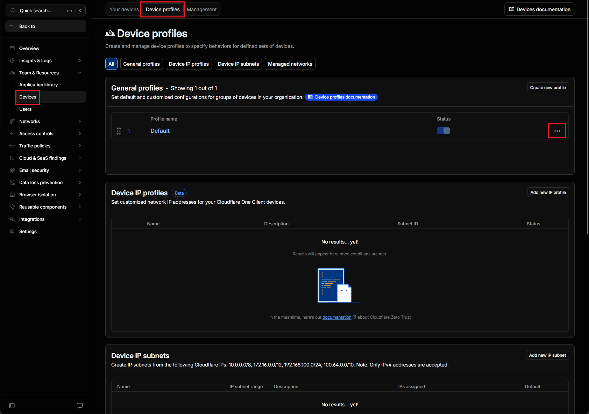
Open the three-dot menu next to Default and click Configure.
Scroll down on the Configure Settings page to find the section for Split Tunnels. Change the mode to Include IPs and domains and click the red Continue and delete button.
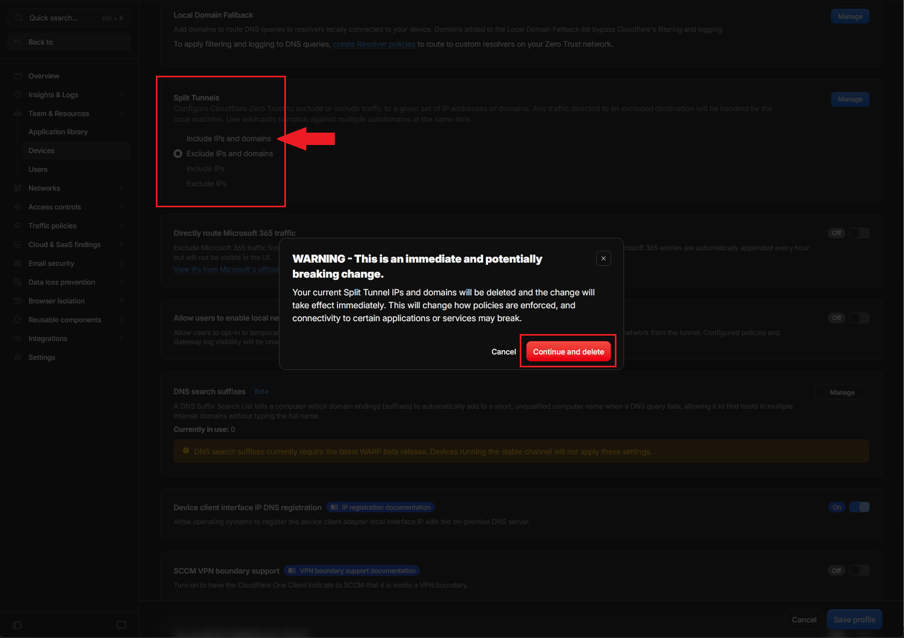
Set Split Tunnel mode to Include IPs and domains, then click Continue and delete.
Add the domains and IP addresses that you want to include in WARP traffic. My suggestion is to include all assets (website, forum, and game). If you have issues loading the forum images, you
may add those as well. A table of recommendations is below.
Selector
Value
Description
Domain
*.
website(s) - wildcard
Domain
website - if not using wildcard
Domain
forum.
forum - if not using wildcard
IP Address
51.222.56.192/32
game server
Domain
iili.io
Optional forum image domain
Domain
*.imgur.com
Optional imgur domain (may not work for some locations)
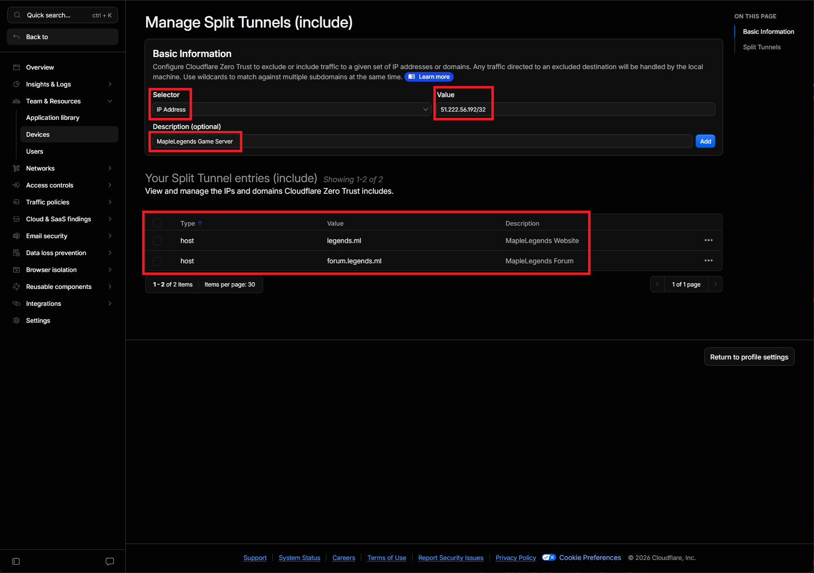
Add each domain and IP address as needed, then save.
4
Install the Cloudflare One Client
Download the Cloudflare One Client (this is the same app as WARP) from
one.one.one.one or directly from Cloudflare's download page.
Run the installer and follow the prompts through to completion.
When the app opens for the first time, it will ask "What would you like to use WARP for?" - choose Cloudflare One Client (the right option). Do not choose "Private browsing" - that mode
doesn't support split tunneling.
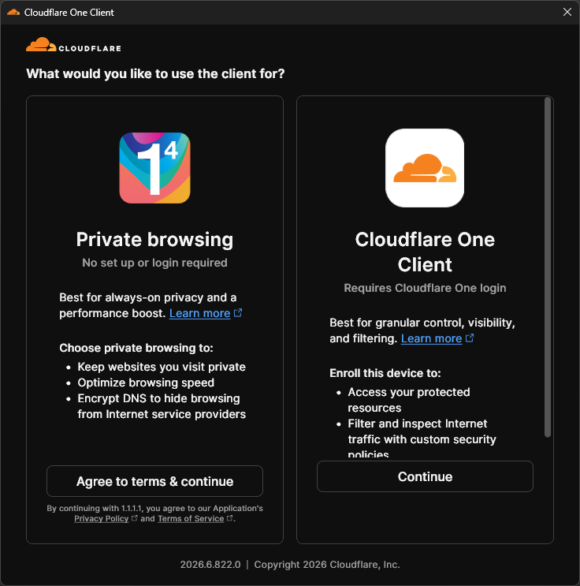
Choose "Cloudflare One Client" - this enables split tunneling via Zero Trust.
After selecting Cloudflare One Client, the app will ask "What is your team name?". Enter the team name you created in the first step and it will open your browser to sign in.
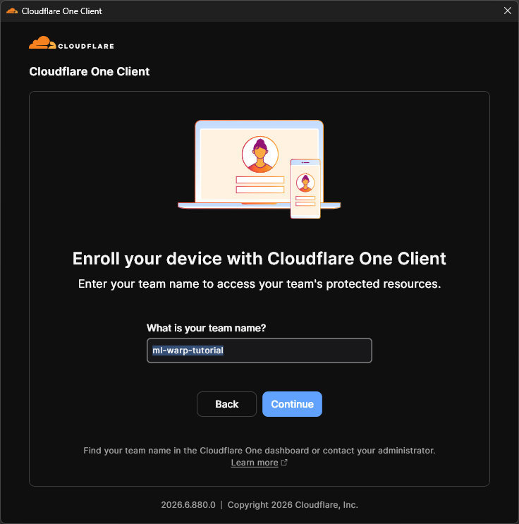
Enter your team name and click Continue
If you successfully joined your team, continue to Phase 5 below! If you were unable to join, try visiting the site of your team directly with your browser. For this example, my team name was ml-warp-tutorial so I would
visit https://ml-warp-tutorial.cloudflareaccess.com/warp. If you still are unable to join your team, visit the troubleshooting section at the bottom of this page.
5
Verify, Connect, and Test
Open the Cloudflare One Client and click Settings then beside Split Tunnel click on the View button. Ensure all entries are present in the table.
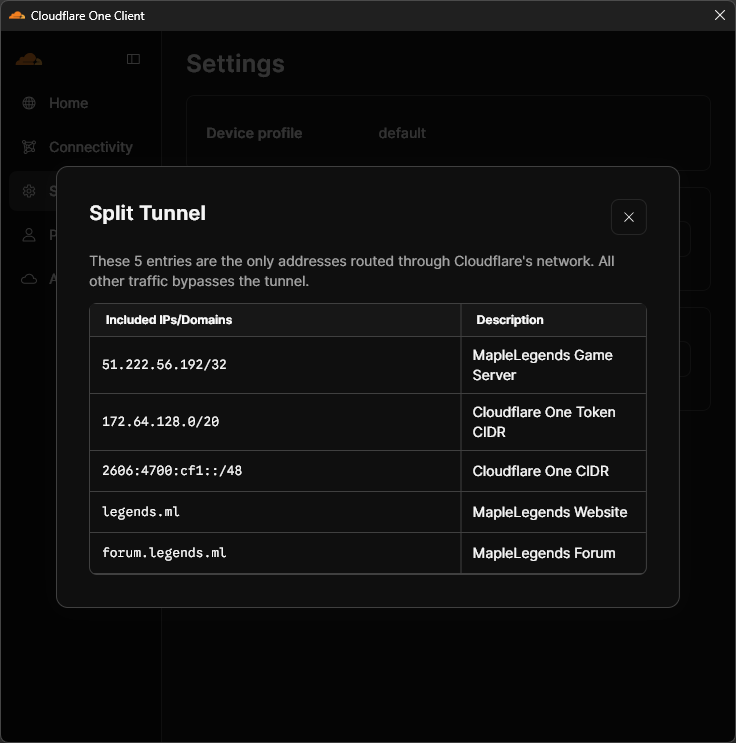
Confirm all your split tunnel entries appear in this list.
Click back to the Home window of the Cloudflare One Client and click Connect. When connected the cloud is orange and it will say Connected.
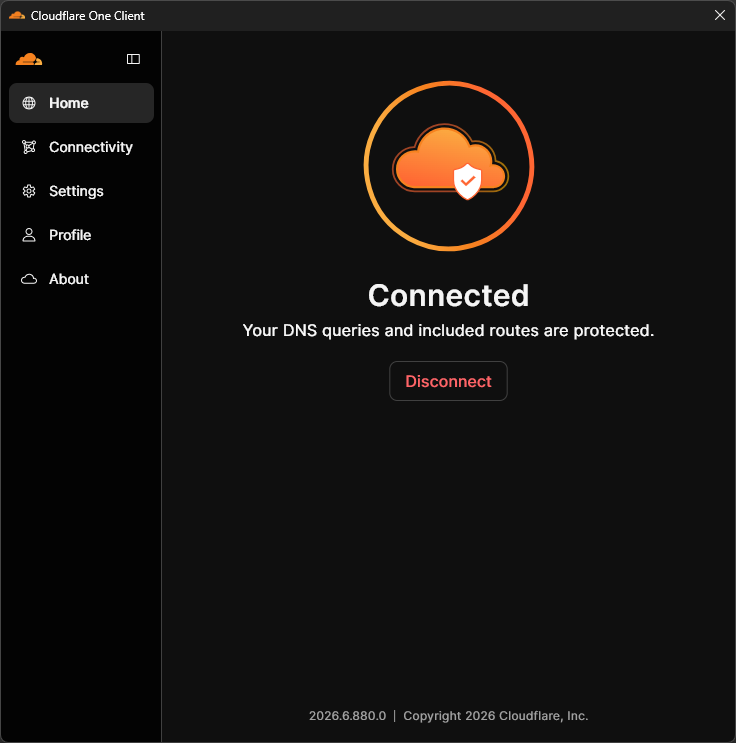
When the cloud turns orange and shows Connected, WARP is active.
Try loading the site. Because only the specified domains/IPs are tunneled through WARP, you should now be able to reach it while the rest of your internet works exactly as before.
To verify split tunneling is working correctly, load a regular site like
https://cloudflare.com/cdn-cgi/trace - it should show warp=off, confirming that general traffic is not going through WARP. Then check a server-specific URL - that traffic will be tunneled.
You're done! WARP is now active only for traffic. You won't notice any difference for everything else - streaming, Discord, and other games all continue using your regular connection.
Sharing this setup with other players
Each player needs to create their own free Cloudflare account and repeat this process. However, you can share the Zero Trust organizations. Other players can enroll into your organization instead of making their own, as long as
you add their email (or another method) to the enrollment policy.
The caveat to this is that the owner of the Cloudflare Zero Trust organization may be able to see information such as: websites visited, network traffic, security threats, and other information reported by the WARP client. Because of this, each player
should make their own Zero Trust organization.
To add more players: go to Devices → Management → Device enrollment → Manage, open your policy, and add their email address under the Emails rule. They can then enroll using your team name and their own email.
The free Cloudflare Zero Trust plan supports up to 50 users - more than enough for your devices, family, and friends that really trust you.
Troubleshooting
Enrollment fails or says "team not found"
Double-check you're entering just the team name (e.g. myserver), not the full domain (myserver.cloudflareaccess.com).
Email code never arrives
Check your spam folder. Codes expire after a few minutes - if it expired, restart the enrollment flow.
Site still blocked after connecting WARP
Make sure you added the correct domain to the split tunnel include list and saved. Also try disconnecting and reconnecting WARP after making changes to the dashboard - the client may cache the old config for a few minutes.
All my internet went through WARP (split tunnel not working)
Confirm the Split Tunnel mode is set to Include (not Exclude). The default is Exclude - if you didn't change it, all traffic routes through WARP.
Still having issues?
Ask in the MapleLegends Discord in the #support channel with a description of where the setup failed.